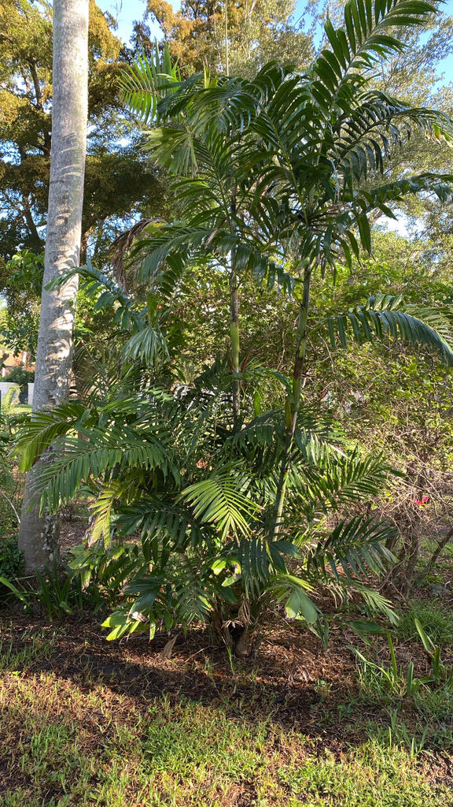

- Unlike many palms with red, orange, or yellow fruit, this palm's fruit ripens to a deep, glossy black. When a clump is carrying ripe fruit, the dark berries make it especially easy to recognize.
- Look closely at the tip of a leaflet. Instead of ending in a sharp point, it looks ragged and uneven, almost as though something bit the end off. This unusual 'bitten' tip is a characteristic feature of Ptychosperma palms.
- This palm usually grows as a clump, producing new slender stems from the base as older stems age. Over time, that steady replacement can create a full group of trunks without the plant needing to be replanted.
- Just beneath the leafy crown is a smooth, cylindrical crownshaft — and on this palm it is a striking silvery white. That pale collar is one of the easiest ways to spot the palm from a distance.
Ptychosperma lineare is native to the tropical rainforests of Papua New Guinea, where it grows in warm, humid conditions. It belongs to Ptychosperma, a group of palms native mainly to New Guinea, the Solomon Islands, nearby islands, and northern Australia.
It is grown as an ornamental palm in tropical and subtropical gardens, valued for its slender stems, graceful foliage, and dark fruit. It remains relatively uncommon in the landscape trade.
- Ptychosperma palms have several features that help identify the genus, including a smooth crownshaft, ridged seeds, and leaflet tips that look as though they have been bitten or cut off. On this species, the crownshaft is especially noticeable because of its pale silvery color.
- The flowers contain both male and female flowers on the same plant, so a single palm can potentially produce fruit without another palm nearby.
- This is a thoroughly tropical palm and is sensitive to cold. In Bradenton, an unusual freeze can damage the leaves and stems, although established clumps may recover by producing new growth from the base.
The small black fruits are attractive to fruit-eating birds in tropical settings, which can help disperse the seeds. In Florida cultivation, ripe fruit may also attract birds, although wildlife use at the park has not been specifically documented.
The small, creamy flowers can attract bees and other insects. Specific pollinator relationships for this species in Florida have not been well documented.
As a non-native palm, it is not known to serve as a larval host for Florida butterflies or moths.
Male and female flowers occur on the same plant, so a single palm can potentially produce fruit without another palm nearby. New plants are grown from seed, while established clumps expand by producing new stems from the base.
Small, creamy to pale-yellow flowers are carried on branched stalks below the crownshaft. The flowers occur in groups of three, typically with one female flower between two male flowers.
Small oval fruits ripen from green to deep glossy black. Each fruit contains a single ridged seed. The name 'Black-Fruit Cluster Palm' refers directly to this ripe color.
Pinnate fronds arch gracefully from the crown. The narrow leaflets have abruptly ragged tips that look as though they have been bitten off — a characteristic feature of Ptychosperma palms. The overall crown is light and feathery.
Trunks are slender, ringed with leaf scars, and typically green near the top before becoming gray lower down. The crownshaft — the smooth cylindrical collar between trunk and crown — is a clean, luminous silvery white on this species. In the clustering form, multiple slender trunks rise from a shared base.
Scan just beneath the leafy crown for the silvery-white crownshaft — the smooth cylinder wrapping the top of the trunk. Then examine a leaflet and notice its flat, ragged tip, almost as though something bit the end off. When the palm is fruiting, look below the crownshaft for clusters of small fruits ripening from green to shiny black.
Finally, look at the base: this palm usually produces several slender trunks from a shared base rather than one thick trunk.
No known toxicity to people, dogs, or cats has been documented for this palm. The fruits are not considered a food for people, and the plant has no prominent spines or thorns.
A close relative, Ptychosperma elegans, is listed as a Category II invasive plant in Florida. Ptychosperma lineare is not listed as invasive, but its fruit can be dispersed by birds, so volunteer seedlings are worth watching for around established plantings.
- © David Vanderbilt (CC-BY-NC), via iNaturalist